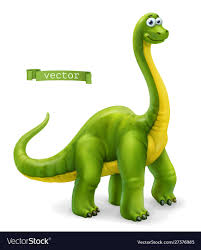

About dinosaurs
Their history
Dinosaurs are a diverse group of reptiles[note 1] of the clade Dinosauria.
They first appeared during the Triassic period, between 243 and 233.23 million years ago, although the exact origin and timing of the evolution of dinosaurs is the subject of active research. They became the dominant terrestrial vertebrates after the Triassic–Jurassic extinction event 201.3 million years ago;
As such, birds were the only dinosaur lineage to survive the Cretaceous–Paleogene extinction event approximately 66 million years ago. Dinosaurs can therefore be divided into avian dinosaurs, or birds; and non-avian dinosaurs, which are all dinosaurs other than birds.
Dinosaurs are represented on every continent by both extant species (birds) and fossil remains. Through the first half of the 20th century, before birds were recognized to be dinosaurs, most of the scientific community believed dinosaurs to have been sluggish and
People love dinosaurs!
Dinosaurs are a varied group of animals from taxonomic, morphological and ecological standpoints. Birds, at over 10,000 living species, are the most diverse group of vertebrates besides perciform fish.
Using fossil evidence, paleontologists have identified over 500 distinct genera and more than 1,000 different species of non-avian dinosaurs.
Dinosaurs are represented on every continent by both extant species (birds) and fossil remains. Through the first half of the 20th century, before birds were recognized to be dinosaurs, most of the scientific community believed dinosaurs to have been sluggish and